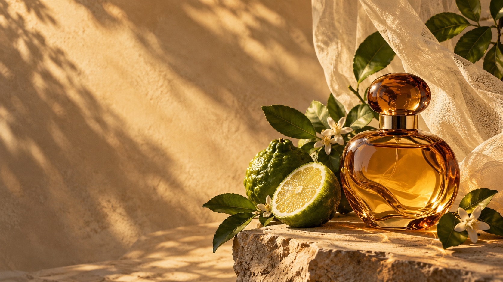

Sunroom
Bergamot · neroli · cedar

Small-batch fragrance made to bring you back to somewhere beautiful.
Explore the scents ↓We begin with the things growing just outside the window: bright citrus, green stems, petals warming in the sun. Then we bottle the feeling.
Bergamot · neroli · cedar
Fig leaf · basil · soft moss
Orange blossom · iris · skin musk